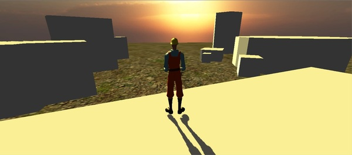
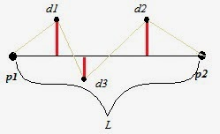
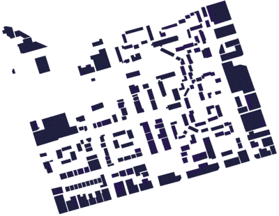
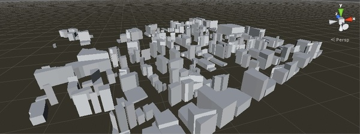
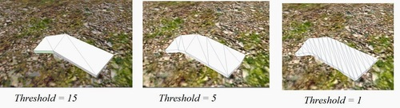

This is a collection of scrips i have written for extracting buildings from building footprints, for a project in the Computer Graphics course at KTH 2014.
It is written in C# for Unity 3D.
It uses Moores-Neighbor Tracing to get all the boundary points of the footprint, then constructs a plane from them, and drags it out into the 3rd dimmension.
But it is not good to simply cunstruct a plane directly from these points, so I use another method to eliminate the non-importan points.
Using Moores-Neighbor tracing algorithm we have an ordered list of boundary points. Now we want to pick out the most important points, from which we will construct a plane. This is the hard part and might be hard to follow.
Let Pn and Pm be two boundary points n < m, meaning Pn comes before Pm in the ordered list of boundary points.
Let L = Line(Pn,Pm) be a line between the points Pn and Pm, and distance(Pi, L) be the distance between the line L and some random boundary point Pi.
Now we can define the function errorsum(Pn, Pm) as errorsum(Pn,Pm) = distance(Pn+1, L)+distance(Pn+2,L)+...+distance(Pm-2,L)+distance(Pm-1,L)

In this image p1 and p2 are Pn and Pm, d1 to d3 are Pn+1 to Pm-1, L is Line(Pn,Pm) and the red lines are distance(Pi, L)
Now to pick out the most important points pick a value for the threshold, e.g. 7, and do the following
Now we have a list of good points from which we can construct a plane, add some walls and a roof and * * poof * * it's a building.
This is an example of a building footprint map:

This was the result

And this is the effect of different values for the threshold
